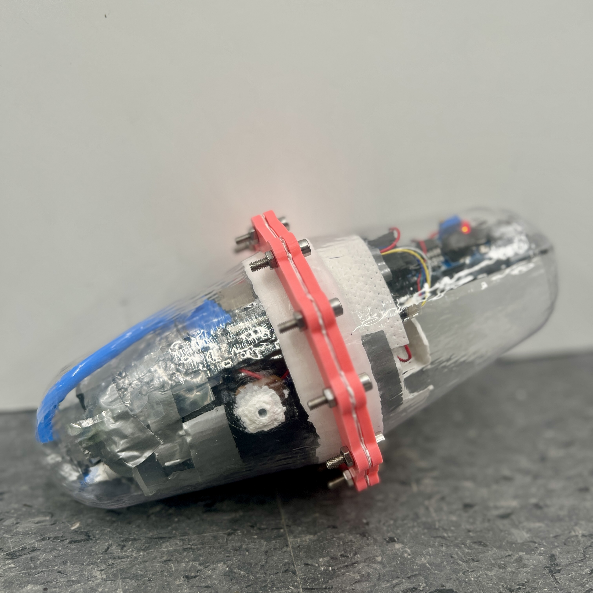

Autonomous Submersible with Buoyancy Control
Closed-Loop Buoyancy Control for Autonomous Depth Measurement
Executive Summary
Designed and built an untethered autonomous submersible for depth measurement in cliff-diving environments. The robot uses pressure-feedback buoyancy control to descend, detect the bottom, and resurface autonomously. Validated to 17 ft and awarded Most Technical Project.
Problem & Constraints
Cliff-diving safety requires reliable depth information where visibility is poor and manual measurement is unsafe. The system needed to:
- Operate untethered with autonomous mission logic
- Survive repeated submersion with a waterproof, pressure-rated housing
- Maintain stable buoyancy control under nonlinear fluid dynamics and sensor noise
- Recover data reliably without requiring continuous underwater communication
System Architecture
The robot integrates a pressure-rated enclosure, pressure/temperature sensing, onboard storage, and a syringe-pump-driven buoyancy bladder. An ESP32 coordinates sensing, closed-loop control, mission logic, and post-mission wireless transfer upon resurfacing.
Autonomous Operation Sequence
- Deploy at the surface and trigger the mission via Wi-Fi (phone).
- Regulate buoyancy using closed-loop control from pressure feedback.
- Detect bottom contact using stabilized pressure readings.
- Reverse buoyancy to initiate ascent.
- After resurfacing, transmit logged depth/temperature data and images wirelessly.
Control & Sensing
Vertical motion is regulated using closed-loop PID control driven by pressure sensor feedback. Pressure is converted to depth using the static water column relationship, enabling robust estimation independent of visual conditions. Gains were tuned to balance response speed and stability in the presence of nonlinearities and noise.
Mechanical & Electrical Implementation
Buoyancy control is achieved using a syringe-pump-driven bladder for precise volume adjustment without external thrusters. The housing was vacuum-formed from PETG with epoxy-sealed bulkheads to maintain waterproofing under repeated trials. Electronics were modularized to simplify integration, sealing, and debugging.
Data Handling & Telemetry
Sensor measurements and images are logged locally during the mission. Wireless communication is enabled only after resurfacing to ensure reliable recovery without requiring live underwater telemetry.
Outcome & Validation
- Reliable autonomous descent, bottom detection, and resurfacing across repeated trials
- Validated to 17 ft with no water ingress and consistent sensor performance
- Recognized with Most Technical Project for system complexity and execution
Key Engineering Takeaways
- Stable feedback control in fluids requires explicit handling of nonlinear dynamics and sensor uncertainty.
- System-level integration and failure-aware mission logic determine real-world reliability.
- Designing for data recovery (not just autonomy) is critical in untethered deployments.
Tools & Skills
ESP32 · Embedded C++ · Closed-Loop Control (PID) · Pressure Sensing & Calibration · Waterproof Mechanical Design · Systems Integration · Rapid Prototyping (PETG, Vacuum Forming)